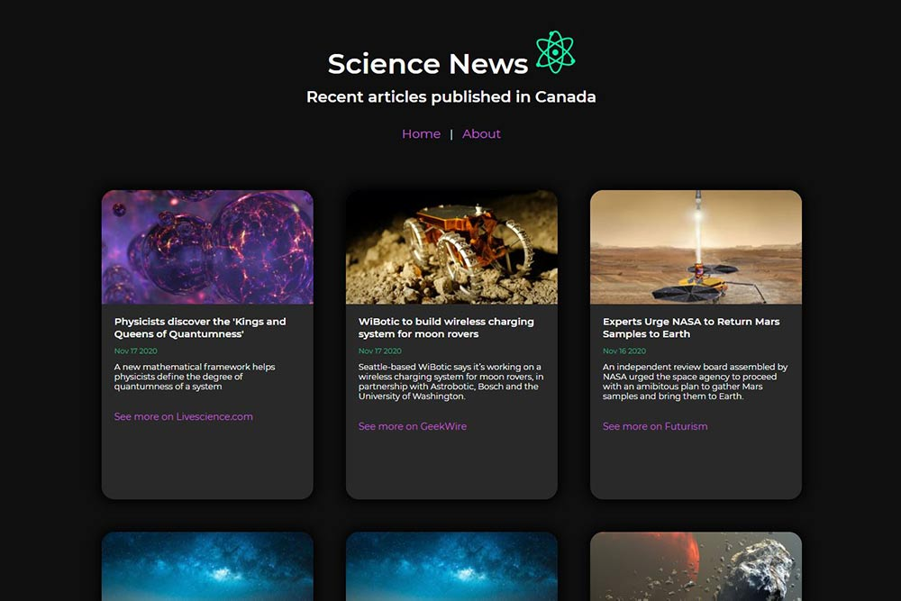

React & Node.js Science News App
This app pulls science news articles published in Canada from an API called GNews.io. I choose to build it with a React front-end and a Node.js/Express backend in order to improve and practice my skills in these technologies.
The npm "request" package was used to get the data from the API. This occurs on the Node.js backend. My React front-end uses Axios to get this data from the backend. React Router is used for routing between the Home and About pages.
Purpose of the project
Before I worked in this industry I went to university and earned a Bachelor of Science degree in Biological Sciences.
I chose this degree because I was curious about the inner workings of things, especially in the field of molecular biology and biochemistry. I worked in science for only a short time but my curiosity for this field remained.
I wanted to keep up with new advances in science. At first I tried subscribing to research journals, but I found that I fell behind in my reading quickly. While in school for web development I came across a news API which could be filtered by topic. I decided to make an app for myself that contained science news articles. This was how I could stay connected to science while practicing my web development skills.
Design
Many of my designs have a light colour palette so this time I wanted to change things up a bit and use a darker colour palette.
While researching dark web designs I learned that it is very visually appealing and good for accessibility to pair light, bright colours with darker design elements. I choose a bright teal and purple, as they felt modern and well-suited to a science theme.
I also knew I wanted the articles to appear in a card-style layout, with one article per card. This made sense with the development process since the API sends article objects with all details for an article packaged together. These are easy to iterate through with JavaScript.
I used a mobile-first design process and created this mock-up using Adobe Illustrator. All icons were created by me, to keep up my Illustrator skills. It should be noted that the final app does not have a "Load more" button. This is because GNews.io only sends 10 articles at a time on the free plan.
Notes on development
I had originally intended to complete this project only with React, but I included Node.js because of my API key. GNews.io gives the user an API key which is meant to be kept secret. If I had included it in the front-end, even in a .env file, it would be visible in the Network tab in browser developer tools. If my API key is kept in the back-end, and out of my github code, it is not visible to anyone.
This made the project more challenging because I needed to connect the front-end and back-end. I created a "get" route in the back-end which fetched the data from the API, and in the front-end Axios made a request to this route.
If you would like to read more details about the challenges of this project and how I handled them you may view this post on my blog.